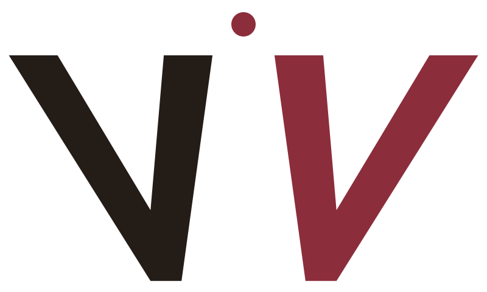
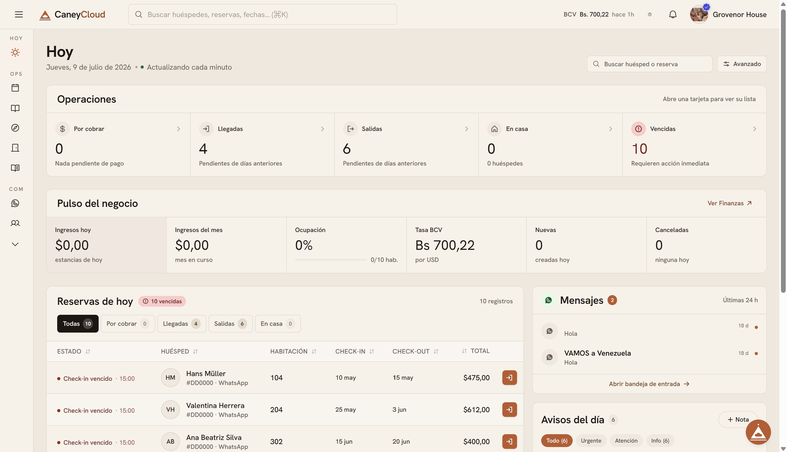

Venture
Meridian Capital AI
Autonomous portfolio intelligence for private markets — an operating company under the VCP umbrella.
View case study →Vegas Consulting Partners
A component system for the portfolio — the ventures, the research, the record. Liquid glass over brushed silver. Nothing rushed, everything intentional. Every element earns its place.
Blur 22–26px, a 10% white hairline, one specular highlight along the top edge. Used for surfaces that float above the graphite.
Body copy sits at 300–400 weight for calm reading. Labels lift to 600 and stretch into wide uppercase tracking — the voice of a system that measures twice.

Autonomous portfolio intelligence for private markets — an operating company under the VCP umbrella.
View case study →Vegas, D. — Journal of Applied Capital Systems, 2025
On how sub-second execution reshapes the incentives of allocators when the counterparty is a model, not a desk.
companies under the VCP umbrella, spanning AI, finance & media.
Entrepreneur · Tech · Finance · AI
The ventures, the research, the record — Vegas Consulting Partners is where the work lives. Composed, exact, and built to last.
Nothing here was done quickly. That is the point.
To build companies at the intersection of capital and intelligence — with the patience the work deserves.
A single, deliberate umbrella where every venture, idea and page reflects one standard — elegance with intent.
Full-content-width horizontal image holder. Ships as a striped placeholder frame; a real image drops in as a single <img> child (covers the frame).
Add .vcp-media-banner--film with an <img> child: static SVG grain overlay plus a slight contrast/saturation mute makes the photo read like film. Grain is static — no motion to suppress.
Nothing on this page was written to fill space — the lede runs full width in the display serif, opened by a drop cap, the way a magazine feature begins.
Body paragraphs then flow two per row, whole paragraphs side by side, so a long read feels like columns in print rather than one narrow scroll.
Below 900px the grid folds to a single column, and full-width breakers — pull quotes, lists, links — carry .vcp-editorial__span.
Magazine-article prose: .vcp-editorial grid with a .vcp-editorial__lede (drop cap via ::first-letter) and two-per-row body paragraphs. Used on The Intent.
Mapped the existing workflow and data sources.
Shipped first pass to a pilot group.
Rolled out to the entire team.
Proprietary dataset built over a decade — a moat a new entrant cannot replicate without the same history.
| Revenue line | Mechanism | Share |
|---|---|---|
| Transaction take-rate | % of completed order | ~70% |
| Subscriptions | Flat monthly fee | ~25% |
Article blocks pair a heading and prose with a captioned product screenshot — used by the project detail page's "Inside the product" section.

Rendered by js/vcp-chart.js from a spec in data/projects.json — aligned single-axis panels sharing the x scale (never dual y-axes), key on the right, crosshair tooltip on hover, data table fallback.
Rendered by js/vcp-carousel.js from a project's article blocks — click the center screen (or use arrows, dots, or the keyboard) to advance; the active block's prose swaps in below. Screenshots wear the .vcp-browser monochrome chrome frame.
Brand marks keep official colors on light plates (the .vcp-logo-chip precedent); wires and pulse are silver and freeze under reduced motion.
Section figure — vcp-section-figure. A decorative figure (usually a poster-scale vcp-section-icon) centered below a prose section's text. Add vcp-section-figure--right to float it beside the prose instead (stacks full-width under 640px).
Fixed bottom-right on every page (issue #43). Voice in, text out — no TTS, no audio output of any kind. Static here for illustration — the live version morphs continuously with slow, randomized timing at rest, and reacts to the visitor's own mic amplitude while listening; see js/voice-widget.js's LiquidBall for the interactive build.
Liquid-motion ball: randomized organic shape/position at rest (no fixed loop), audio-reactive to the visitor's mic while listening. Static here since demo.html doesn't load voice-widget.js; prefers-reduced-motion disables all motion on the live page too.
Clicking a nav tab dips to black (--dur-dip-in), the destination's serif title breathes alone for a beat, then a slow fade-away (--dur-dip-out) reveals the page. The real navigation loads hidden behind the black. Honors prefers-reduced-motion; anchors and external links are unaffected. Component: html.vcp-dip in components.css + js/page-dip.js.
Internal navigation runs through one system (js/page-dip.js, issues #57/#89/#107). The first visit to a page this session plays the title dip: the page name breathes over black, then fades away (html.vcp-dip). Every repeat visit — and any internal link without a name — is a plain cross-fade through a scrim veil (html.vcp-fade, --scrim): the veil fades up over the leaving page and lifts on the arriving one. Nav tabs take their title from the link text; other links opt into the dip with a data-dip-title attribute (e.g. project cards set it to the project name). Honors prefers-reduced-motion; anchors, downloads, and external links are native. The Penrose triangle loader (former issue #71) was removed in #107.